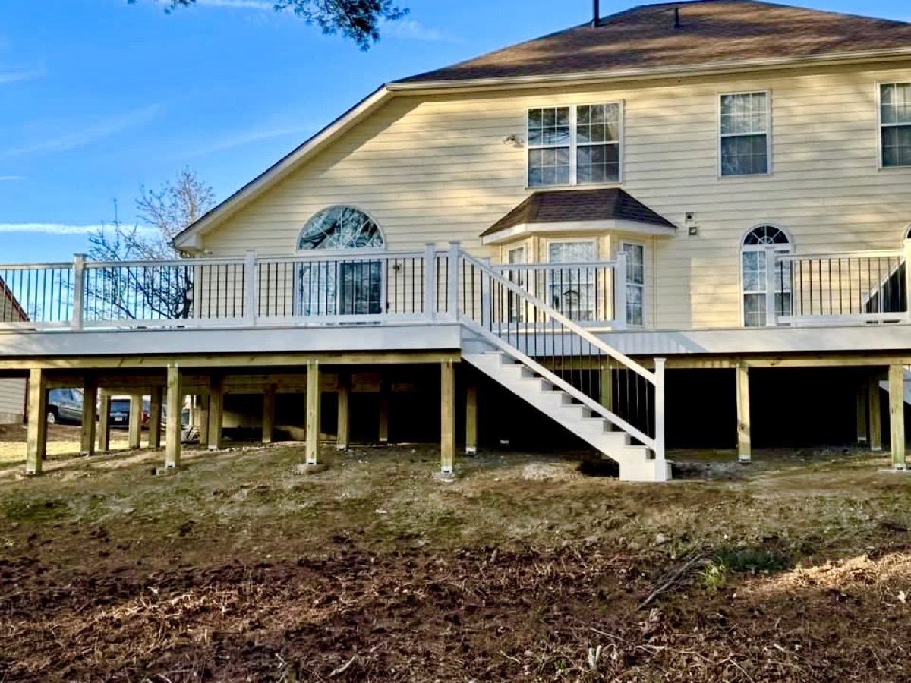
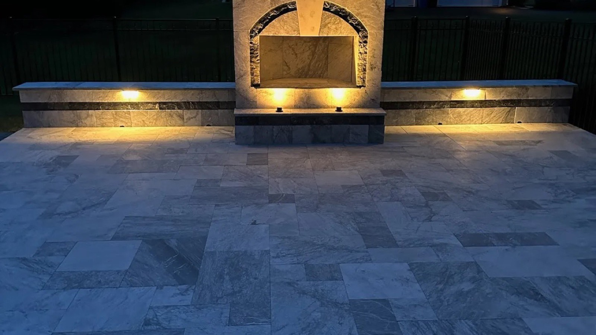
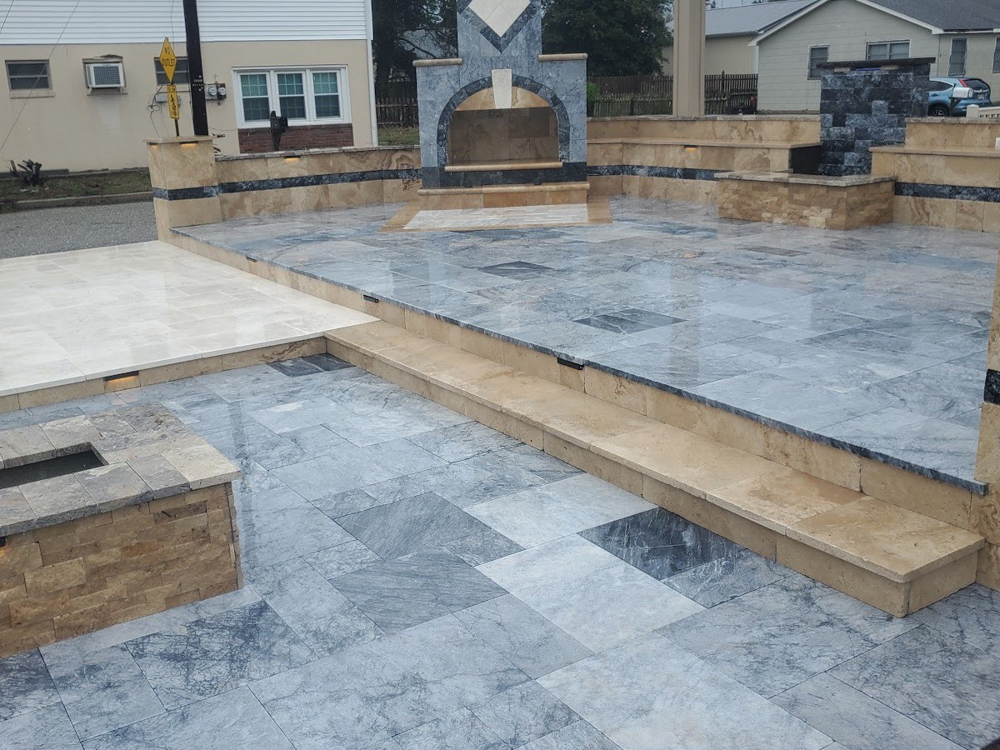
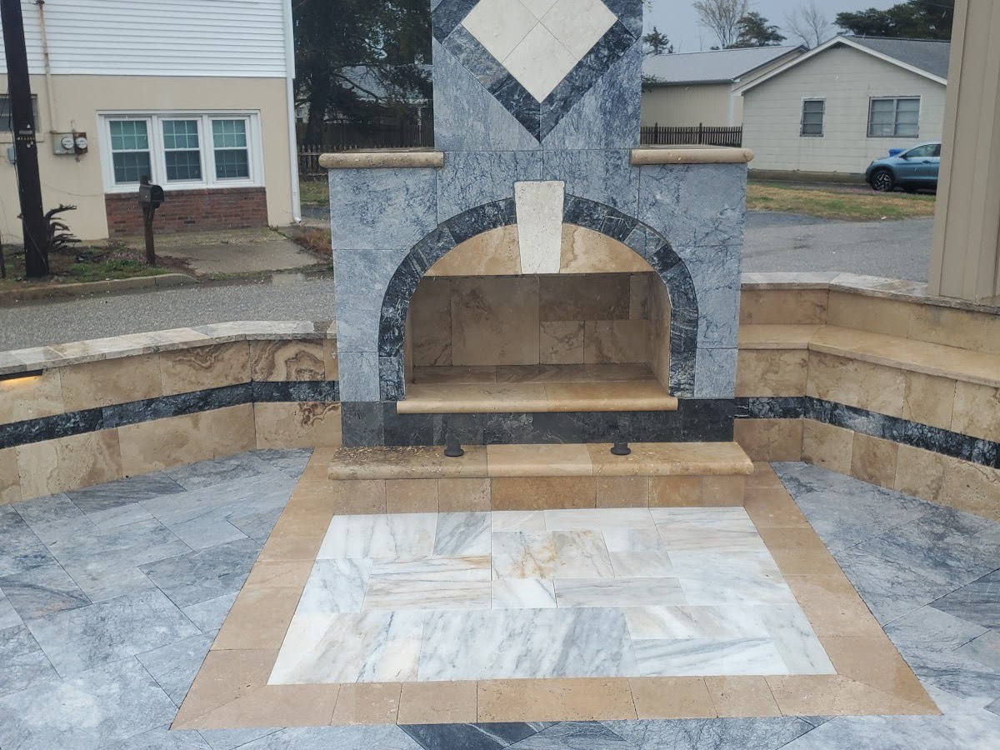
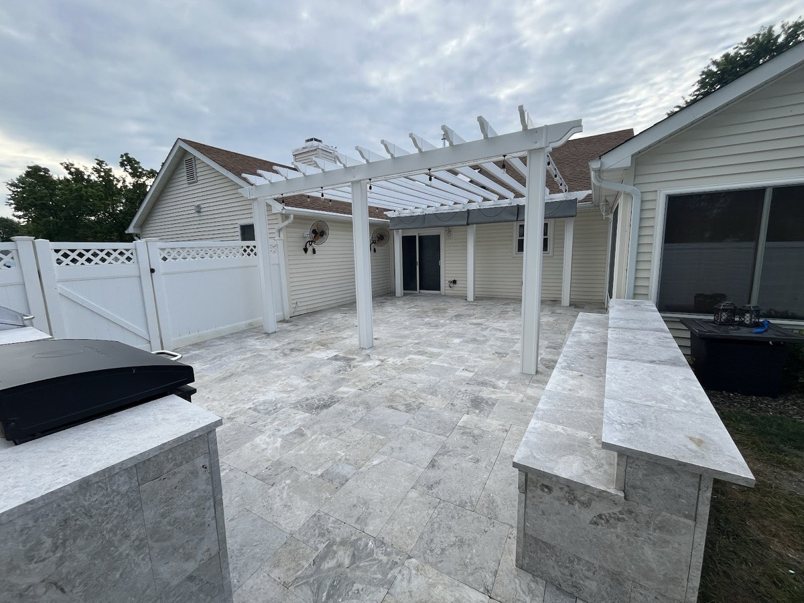
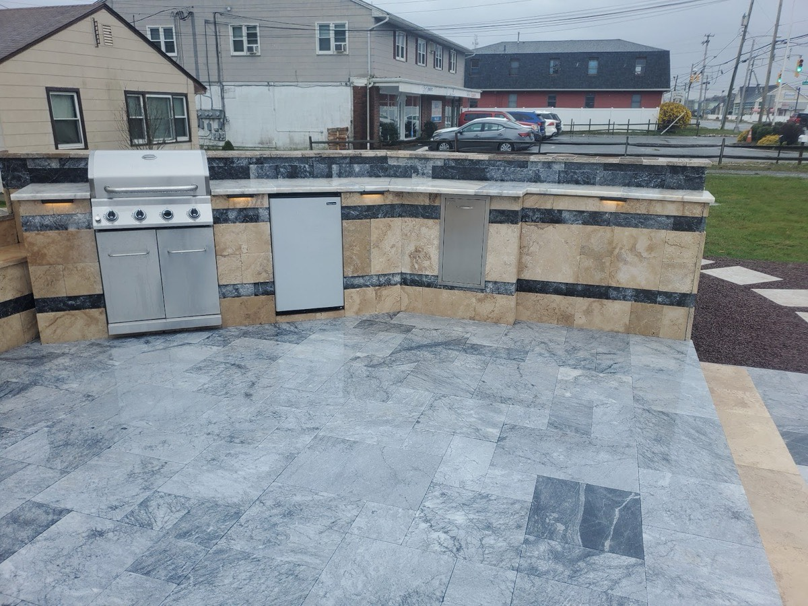
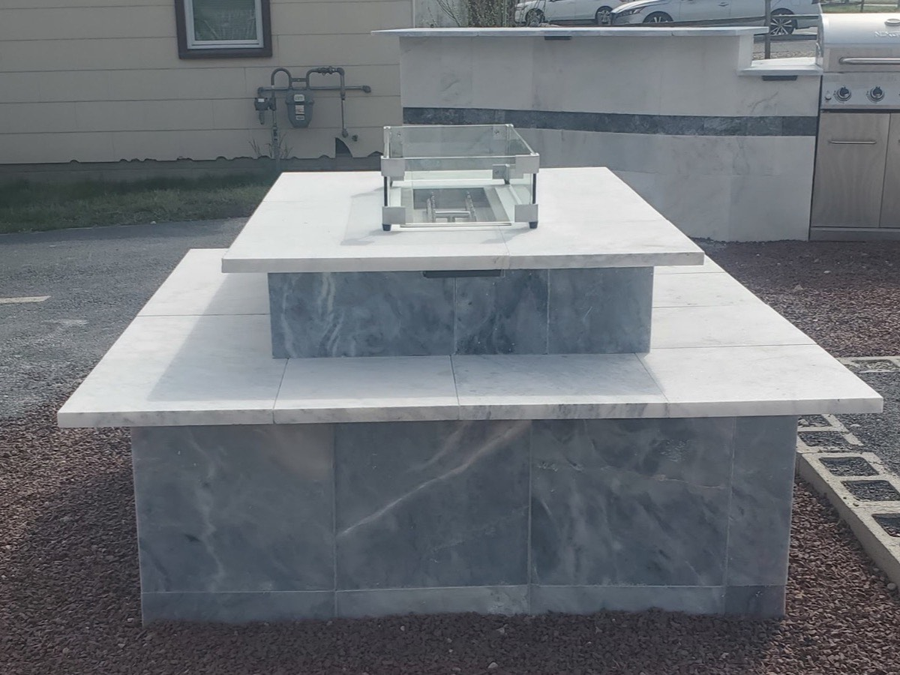
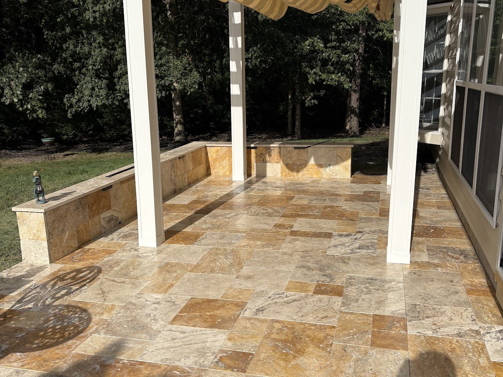
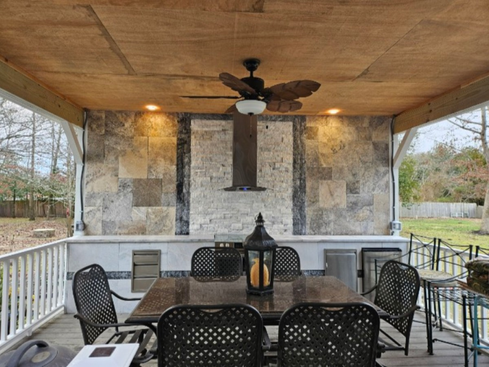
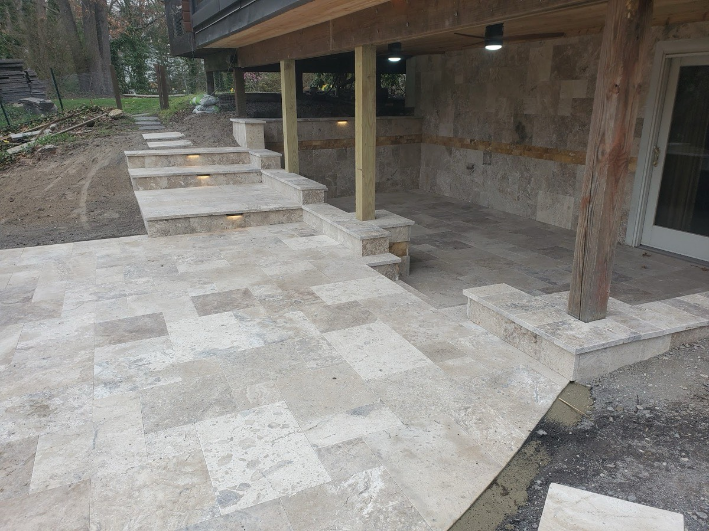

Before

A blank slate, framed up
A new deck goes on, the grade gets set, and the yard is prepped for stone — the unglamorous groundwork that decides whether a patio lasts.

Cape May County · Jersey Shore
Custom travertine patios, outdoor kitchens and fire features — the high-end outdoor living the shore is known for.
Outdoor living, done right
Set in Stone Pavers builds the kind of backyard you plan a summer around: wide travertine decks underfoot, a fire feature for the cool nights, and a real outdoor kitchen for everyone who never leaves the patio. We work in natural stone and premium pavers, and we obsess over the parts you don't see — the base, the grading, the drainage — because that's what keeps a patio dead-level and tight for decades, not seasons.
From a single walkway to a full backyard transformation, every project is built to match the shore homes it sits behind. If you can picture it, we can lay it in stone.
What we build
The portfolio
Real projects, real materials — travertine, marble and natural stone laid across patios, pool decks and outdoor kitchens on the Jersey Shore.







Before & after
The biggest jobs start as bare dirt and a tired deck. The work is in the vision — and the base prep, grading and stonework that turn a blank yard into an outdoor room.

A new deck goes on, the grade gets set, and the yard is prepped for stone — the unglamorous groundwork that decides whether a patio lasts.
Wide travertine underfoot, a pergola for shade, seating walls and room to gather — the kind of space a family plans whole summers around.
“I'm embarrassed to say we had the worst backyard in the development. But not anymore! Bill and his team built us the most gorgeous deck I've ever seen — white travertine marble, outdoor kitchen, fire.”
What we build
Specialists in travertine, natural stone and premium pavers — from the centerpiece projects to the walkways that tie it all together.
Level, tight-jointed travertine and paver patios built on a base that holds — the foundation of every outdoor living space.
Built-in grills, stone cabinetry and prep islands so the cook never has to leave the party. Designed around how you actually entertain.
Custom fire pits, fireplaces and glass fire features in natural stone — the centerpiece that keeps the backyard in season after dark.
Cool, slip-aware travertine and marble pool decks that frame the water and stand up to sun, salt and bare feet all summer.
Stone walkways, front entries and steps that pull the whole property together — the finishing details that make it feel intentional.
Engineered retaining walls plus built-in seating and accent walls that shape grade and add usable space to the yard.
Ready for the whole thing? We take a yard from bare ground to a finished outdoor living space — patio, kitchen, fire feature, walls and walkways designed to work together as one room.
Why homeowners choose us
Travertine, marble and premium pavers are what we do — not a side service. The material expertise shows in every joint and edge.
The part you never see is the part that lasts. Proper base, grading and drainage are why our patios stay level and tight for the long haul.
Thirteen Google reviews from homeowners across the shore — including five-year repeat customers who called us back for the next project.
Sun, salt air and pool traffic are hard on stone. We build outdoor living that's made to take a Jersey Shore summer, year after year.
How it works
We walk the yard with you, talk through materials and ideas, and figure out what's possible on your site.
You get a clear plan and an honest, itemized quote — layout, materials and scope, no surprises.
Base, grading, stone and features — done in the right order by a crew that does this every day.
We clean up, walk the finished project with you, and hand over a backyard built to last.
From our Google reviews
"I'm embarrassed to say we had the worst backyard in the development. But not anymore! Bill and his team built us the most gorgeous deck I've ever seen — white, travertine marble, outdoor kitchen, fire."
"Bill came out to fix our rotted deck and create a patio for us. We had him five years ago put on a patio that connected to the deck."
Service area
Based in Marmora and working throughout Upper Township and the surrounding Cape May County shore towns. If you're nearby and not listed, ask — we cover the area.
Good to know
Travertine and natural marble stay noticeably cooler underfoot in summer sun, which matters a lot on a pool deck, and they bring a high-end, organic look that concrete can't fully copy. We work in premium pavers too — we'll help you pick the right material for the spot, the budget and how you'll use it.
Yes. We handle the full build — excavation, base prep, grading and drainage, then the stonework and features on top. The base and drainage are the most important part of a patio that stays level and tight, so we never cut corners there.
That's our favorite kind of project. We design full backyard transformations where the patio, outdoor kitchen, fire feature, walls and walkways all work together as one finished outdoor room — planned up front so the whole space flows.
We're based in Marmora and build throughout Upper Township and the surrounding Cape May County shore towns. If you're close by and don't see your town listed, just ask — there's a good chance we cover it.
Start with a free on-site design consultation. We'll walk the yard, talk through materials and ideas, and follow up with a clear, itemized quote covering layout, materials and scope — no obligation.
Free design consult
Tell us a little about your yard and what you have in mind. We'll set up a free on-site consultation and walk you through what's possible.
(609) 938-6636Prefer to call? We're happy to talk through your project.